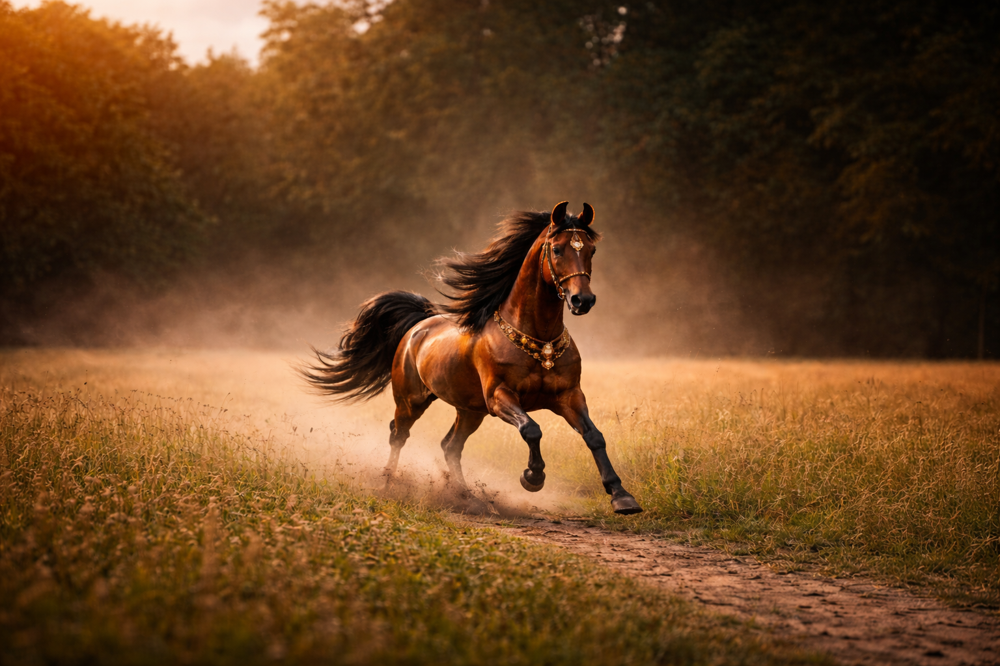

The iconic Indian horse breed known for its curved ears and royal heritage.
The Marwari horse is a rare Indian breed famous for its inward-curving ears and deep historical connection with Rajput warriors of Rajasthan.
Rajasthan, India
14 – 16 hands
25 – 30 years
Loyal & Brave
The Marwari horse originated in the Marwar region of Rajasthan. Historically it was bred and used by Rajput warriors for warfare, endurance riding, and ceremonial purposes.
This breed is extremely resilient and well adapted to the hot desert climate. The most distinctive feature of the Marwari horse is its inward-curving ears, which often touch at the tips.
The price of a Marwari horse generally ranges between ₹2,00,000 and ₹20,00,000+ depending on pedigree, training level, and physical quality.